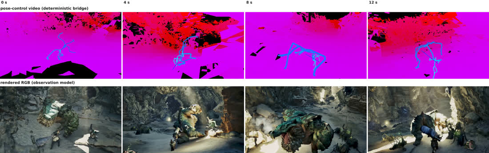

How much of a world is computed, and how much is generated
Every way of putting a virtual world on screen sits somewhere on one axis. At the left the world is a program and every pixel is the consequence of code. At the right it is a distribution and every pixel is a sample. The interesting question is not which end wins. It is where you put the cut — which parts of a world are exact by construction, and which are worth generating.
Pure program. Geometry, collision and occlusion are exact because they are computed, and nothing outside the authored assets exists. A scene is an explicit tree of authored nodes, so consistency is not a behaviour that has to be learned or defended — it is a property of the data structure.

The engine still owns the simulation and hands over buffers — depth, albedo, normals, motion vectors — and a network turns them into the image. DLSS began as upscaling and has grown into exactly this: NVIDIA now describe DLSS 5 as neural rendering that injects lighting and material response into pixels, not merely more of them. Which is why upscaling and G-buffer neural rendering are one point on this axis rather than two.

Right of the middle, and we are explicit about why: our state is generated too. A learned model invents what happens next, and only the step from state to geometry is a program — a rule-governed operator with no weights in it. So we inherit exactness where a rule can provide it and generate everything else, which is a claim about where the cut belongs rather than about how much generation is good for you.

Pure observation. No state, no program, nothing exact by construction — consistency and control are behaviours that emerge, or fail to. The appeal is obvious: no rig, no assets, no authored world, and whatever the data contains is what the model can produce.

Read left to right and something is given up at every step; read right to left and something is gained. The middle is where a program and a generator each do what they are good at, and it is not obvious that any current system is there. We sit right of it because we generate the world's state and compute only its geometry. That is a claim about where the cut belongs, and the rest of this page is what it buys.